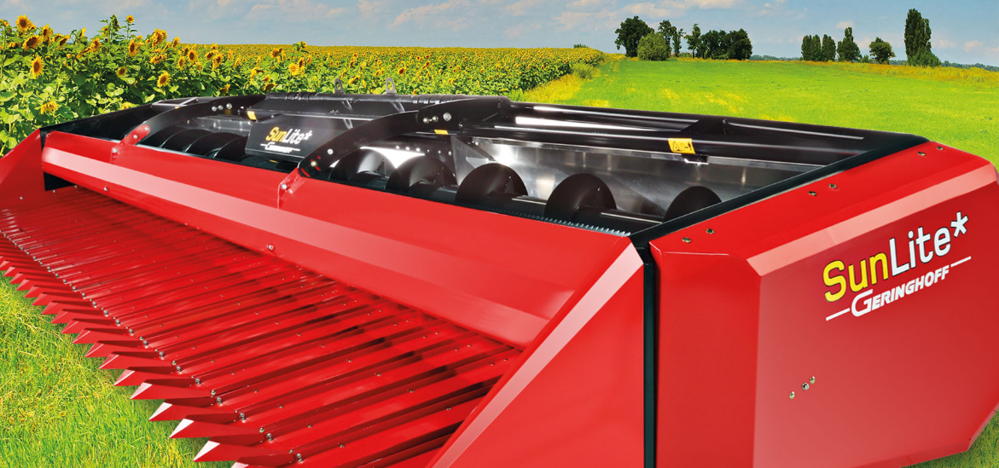
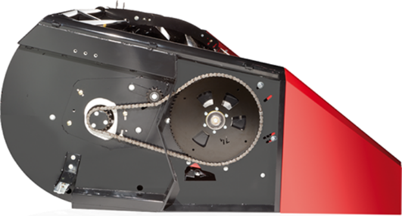

Сбор урожая — это сложная сезонная работа. Здесь нет места отказам оборудования или потерям урожая. Тот, кто хочет работать с прибылью, должен иметь возможность положиться на свое техническое оснащение на все 100 %. Поэтому коллектив специалистов в области сбора урожая компании Geringhoff постоянно берется за решение новых технических и экономических вопросов и разрабатывает интеллектуальные решения, позволяющие облегчить ежедневный труд и повысить производительность.
Жатка сплошного среза для уборки подсолнечника SunLite* — это надежное орудие труда, хорошо зарекомендовавшего себя качества Geringhoff.
Краткий обзор преимуществ:

незначительная затрата усилий: эффективный и надежный привод подающего валка, транспортного шнека и косилочного ножа требует лишь небольшой затраты усилий. Специальная конструкция SunLite* обеспечивает дополнительную оптимизацию усилий: в сочетании с силой тяжести рабочий угол ведет к тому, что уже отрезанные головки автоматически проталкиваются в комбайн, что облегчает затягивание следующих головок;
оптимальный поток продукта: округленная лоткообразная форма и транспортный шнек диаметром 620 мм с индивидуальной настройкой образуют хорошую основу для очень высокой производительности при низкой скорости вращения. Главная транспортировка собранного урожая и минимальные затраты на эксплуатацию и техобслуживание.Снижение затрат на эксплуатацию и техобслуживание при одновременном отсутствии потерь урожая и ущерба для окружающей среды;
сбор урожая с малыми потерями: узкий желоб для семечки обеспечивает максимальную возможность регулирования для различных расстояний между рядками. В сочетании с возможностью индивидуальной настройки обеспечивается процесс сбора урожая с исключительно низкими потерями;
удобный доступ к компонентам: благодаря удобному доступу к компонентам работы по техническому обслуживанию и замена изношенных частей проводятся быстро и являются простыми;
правильное срезание: хорошо себя зарекомендовавшее уборочное оборудование Schumacher со сменными лезвиями, обеспечивает надежное и эффективное срезание, особенно во влажных условиях. Лезвия ножей и косилочные пальцы легко заменяются без демонтажа всего косилочного ножа.
небольшой вес и длительный срок службы: еще одно преимущество жатки для уборки подсолнечника SunLite*. Применение компонентов из алюминия и точная конструкция всего устройства обеспечивают максимальную устойчивость при небольшом весе. Кроме того, удалось свести к минимуму количество подвижных частей, что положительно сказалось на эксплуатационной безопасности.